Design with CSS
by Sanne 't Hooft
The presentation that Sanne gave was really inspiring. It was interesting to see how far you can go with CSS and what you can do using it. He then showed us some student's work and some of his own. You can clearly see the experimental process with every work that he makes and how he adds a touch of humor to it. He talked about Microinteractions, their definition and how you properly design them.
3 definitions
- A signature moment in a digital product (site, app, ...)
- A product based around one micro-interaction
- People see interactions with a digital product as a series of micro-interactions.
4 roles for creating Microinteractions
- Examples - on little big details
- Inspiration - on css voor de dames
- Inspiration - on spelen met css
He also told us about CSS perspective and how it works. The perspective property number on the container is how far the container from the middle point.
What I learned
- "Design for what is important to the user".
- "Understand what the user needs are".
- “Delight is not enough and sometimes it is annoying”.
- "Feelings are important in the interaction".
- "First sketch then code".
- “Experiment a lot”.